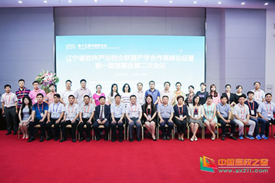

沈阳工业大学承办辽宁省软件产业校企联盟产学合作高峰论坛
2017-06-30
近日，辽宁省软件产业校企联盟产学合作高峰论坛暨第一届理事会第二次会议于中国软交会期间成功举办。沈阳工业大学与东软睿道教育公司承办本次论坛，来自省内高校和企业的近百人参加论坛，共同探讨产学合作深度融合。论坛主持人由校企联盟秘书长、沈阳工业大学软件学院院长牛连强担任。他向与会嘉宾介绍了辽宁省软件产业校企联盟的成立初衷。辽宁省软件产业校企联盟是由辽宁省政府主导，以促进校企深度合作、创新发展为主要任务，学校、企业、园区和科研院所共同参与建设的省级公益平台。

校企联盟理事长、沈阳工业大学副校长袁晓光在论坛致辞中表示：我国当下正处在由人力资源大国向人力资源强国转变，由教育大国向教育强国转变的关键时期，如何实现各方资源的有效互补，共同致力于为行业培养、输送更多与经济、产业发展相适应的高质量人才显得至关重要。辽宁软件产业联盟充当了高校与企业间的桥梁，以“合作、创新、共赢、发展”为宗旨，打造“政产学研创”合作多赢的协同创新发展平台，促进企业与高校在人才链、产业链和创新创业链的深度融合。
辽宁工程技术大学软件学院院长刘万军，大连交通大学软件学院院长黄明，东软控股副总裁、东软睿道总裁李印杲，中软国际教育集团COO李佳历分别发表讲话。
论坛结束后，辽宁软件产业校企联盟召开了第一届理事会第二次会议。会议选举并组成了联盟第一届专家委员会。辽宁省软件产业校企联盟将积极携手高校和企业，共同探索产学合作协同育人的新模式、新思想和新途径。